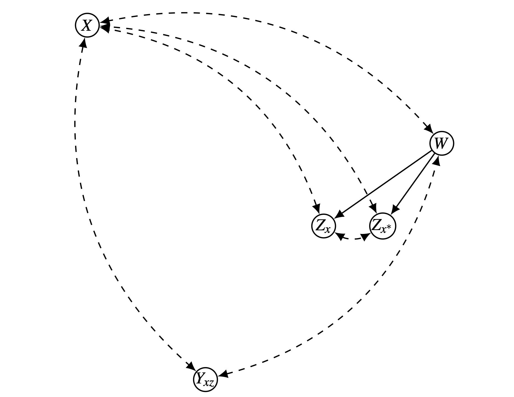

Introduction
- 인과추론에서 총 효과(Total Effect)를 구하는 것만으로는 충분하지 않은 경우가 많습니다.
- 우리는 원인 변수 \(X\)가 결과 변수 \(Y\)에 영향을 미칠 때, 그 메커니즘이 \(X\)가 \(Y\)에 직접(Directly) 영향을 미친 것인지, 아니면 중개 변수(Mediator, \(Z\))를 거쳐 간접(Indirectly) 영향을 미친 것인지 구분하고자 합니다.
- 이번 포스트에서는 Pearl의 구조적 인과 모형(Structural Causal Model) 프레임워크를 기반으로 통제된 직접 효과(Controlled Direct Effect, CDE)와 자연 직접 효과(Natural Direct Effect, NDE)의 개념을 정의하고, 이를 실험적 데이터와 관찰 데이터에서 어떻게 식별(Identification)할 수 있는지 수식적으로 유도해 보겠습니다.
1. Notation & Framework
- \(X\): 통제 변수 (Control variable, 원인)
- \(Y\): 반응 변수 (Response variable, 결과)
- \(Z\): \(X\)와 \(Y\) 사이의 모든 중개 변수 집합 (Intermediate variables)
- \(W\): 공변량 집합 (Covariates, \(X\)나 \(Z\)의 자손이 아님)
Counterfactual Notation
- 인과 효과를 정의하기 위해 잠재적 결과(Potential Outcome) 표기법을 사용합니다.
\[Y_x(u)\]
- 이는 단위(unit) \(u\)에서 \(X\)를 \(x\)로 설정(\(do(X=x)\))했을 때 관측되는 \(Y\)의 값을 의미합니다.
2. Controlled Direct Effects (CDE)
2.1. Definition
가장 직관적인 직접 효과의 정의는 중개 변수 \(Z\)를 특정 값 \(z\)로 고정해버리는 것입니다. 이를 통제된 직접 효과(CDE)라고 합니다.
단위 \(u\)에 대하여, 중개 변수 \(Z\)를 \(z\)로 고정한 상태에서 \(X\)를 \(x^*\)에서 \(x\)로 바꿀 때의 효과는 다음과 같습니다.
\[CDE_z(x, x^*; Y, u) = Y_{xz}(u) - Y_{x^*z}(u)\]
2.2. Average CDE
- 개별 단위가 아닌 모집단 전체에 대한 평균 효과는 기대값을 취하여 정의합니다.
\[CDE_z(x, x^*; Y) = \mathbb{E}[Y_{xz} - Y_{x^*z}]\]
- 이 척도는 정책적으로 중개 변수 \(Z\)를 물리적으로 통제(예: 처방, 강제 설정)할 수 있을 때 유용합니다. 하지만 \(Z\)를 인위적으로 고정하는 것이 불가능하거나 무의미한 상황에서는 한계가 있습니다.
3. Natural Direct Effects (NDE)
3.1. Motivation & Formulation
우리가 자연스럽게 생각하는 “직접 효과”는, \(X\)가 변할 때 \(Z\)를 억지로 고정하는 것이 아니라, \(Z\)가 \(X\)의 기준 값(\(x^*\)) 하에서 가졌을 자연스러운 값을 유지하게 한 상태에서 \(X\)만 \(x\)로 바꾸는 효과입니다. 이를 자연 직접 효과(NDE)라고 합니다.
이를 표현하기 위해 중첩된 반사실(Nested Counterfactual) 개념이 필요합니다.
- \(Z_{x^*}(u)\): \(X\)가 \(x^*\)일 때 단위 \(u\)가 가질 \(Z\)의 값.
- \(Y_{x Z_{x^*}(u)}(u)\): \(X\)를 \(x\)로 설정하되, \(Z\)는 “\(X\)가 \(x^*\)였더라면 가졌을 값”으로 설정했을 때의 \(Y\).
3.2. Definition
- 단위 \(u\)에서의 자연 직접 효과는 다음과 같이 정의됩니다. \[
\begin{aligned}
NDE(x, x^*; Y, u) &= Y_{x Z_{x^*}(u)}(u) - Y_{x^* Z_{x^*}(u)}(u) \\
&= Y_{x Z_{x^*}(u)}(u) - Y_{x^*}(u)
\end{aligned}
\]
- 여기서 \(Y_{x^*}(u)\)는 \(X=x^*\)일 때의 자연스러운 \(Y\)값이므로, \(Y_{x^* Z_{x^*}(u)}(u)\)와 동일합니다. 즉, \(Z\)는 \(X=x^*\)일 때의 값으로 고정된 상태에서, \(X\)입력만 \(x\)로 바뀐 효과를 측정합니다.
- 모집단 평균에 대한 NDE는 다음과 같습니다.
\[NDE(x, x^*; Y) = \mathbb{E}[Y_{x Z_{x^*}}] - \mathbb{E}[Y_{x^*}]\]
4. Experimental Identification of NDE
4.1. The Identification Problem
- NDE 식별의 핵심 어려움은 \(\mathbb{E}[Y_{x Z_{x^*}}]\) 항에 있습니다. 이 항은 \(X=x\)일 때의 결과 \(Y\)와 \(X=x^*\)일 때의 중개 변수 \(Z\)를 동시에 요구하기 때문입니다.
- 현실에서는 하나의 단위에 대해 동시에 서로 다른 두 가지 \(X\) 상태(\(x\)와 \(x^*\))를 관측할 수 없습니다.
- 따라서 일반적인 \(P(Y_x=y)\)나 \(P(Y_{xz}=y)\) 형태의 표현식으로 환원되지 않습니다.
4.2. Identification Conditions
- 하지만 특정 조건 하에서는 실험적 데이터(experimental data)나 관찰 데이터로부터 NDE를 식별할 수 있습니다.
- 조건: \(X\)나 \(Z\)의 자손이 아닌 공변량 집합 \(W\)가 존재하여 다음을 만족해야 합니다.
\[Y_{xz} \perp\!\!\perp Z_{x^*} \mid W\]
- 이 조건은 \(W\)를 통제했을 때, “\(Z\)를 \(z\)로 고정하고 \(X\)를 \(x\)로 설정했을 때의 잠재적 결과(\(Y_{xz}\))”와 “\(X\)가 \(x^*\)일 때의 자연적 \(Z\)값(\(Z_{x^*}\))”이 독립이라는 의미입니다.
4.3. Derivation
우리가 구하고자 하는 목표는 자연 간접 효과(NIE) 계산에 필요한 \(\mathbb{E}[Y_{x Z_{x^*}}]\)를 식별 가능한 형태로 변환하는 것입니다.
- 전체 확률의 법칙 (Conditioning on \(W\) and \(Z\)):
먼저, 공변량 \(W\)와 매개변수 \(Z\)에 대해 기댓값을 분해합니다. \(Z\)가 가질 수 있는 모든 값 \(z\)와 \(W\)가 가질 수 있는 모든 값 \(w\)에 대해 가중 평균을 냅니다.
\[ \mathbb{E}[Y_{x Z_{x^*}}] = \sum_w \sum_z \mathbb{E}[Y_{x Z_{x^*}} \mid Z_{x^*} = z, W=w] P(Z_{x^*} = z \mid W=w) P(W=w) \]
- Composition 적용:
위 식의 기댓값 부분인 \(\mathbb{E}[Y_{x Z_{x^*}} \mid Z_{x^*} = z, W=w]\)를 자세히 봅니다.
- 조건(Condition): 우리는 현재 \(Z_{x^*} = z\)인 상황을 가정하고 있습니다.
- 적용(Application): Composition 공리에 의해, 이 조건 하에서는 \(Y\)의 아래 첨자 \(Z_{x^*}\)를 스칼라 값 \(z\)로 대체할 수 있습니다.
\[ Y_{x \mathbf{Z_{x^*}}} \quad \xrightarrow[\text{Since } \mathbf{Z_{x^*} = z}]{} \quad Y_{x \mathbf{z}} \]
\[ \mathbb{E}[Y_{x Z_{x^*}} \mid Z_{x^*} = z, W=w] = \mathbb{E}[Y_{xz} \mid Z_{x^*} = z, W=w] \]
위의 결과를 원래 식에 대입하면 최종적으로 아래와 같은 유도 과정을 얻게 됩니다. 여기서 \(Y_{xz}\)는 더 이상 확률변수 \(Z_{x^*}\)에 의존하지 않는, \(x\)와 \(z\)로 고정된 잠재적 결과입니다.
\[ \mathbb{E}[Y_{x Z_{x^*}}] = \sum_w \sum_z \mathbb{E}[\mathbf{Y_{xz}} \mid Z_{x^*} = z, W=w] P(Z_{x^*} = z \mid W=w) P(W=w) \]
- 조건부 독립성 적용 (\(Y_{xz} \perp Z_{x^*} \mid W\)):
- 가정에 의해 \(\mathbb{E}[Y_{xz} \mid Z_{x^*} = z, w]\)는 \(Z_{x^*}\)와 무관하므로 \(\mathbb{E}[Y_{xz} \mid w]\)로 단순화됩니다. \[ = \sum_w \sum_z \mathbb{E}[Y_{xz} \mid w] P(Z_{x^*} = z \mid w) P(w) \]
- NDE Formula:
- \(\mathbb{E}[Y_{x^*}]\) 부분 역시 Composition 법칙에 의해 유사하게 분해하면, 최종적으로 NDE 식별 공식은 다음과 같습니다.
\[ NDE(x, x^*; Y) = \sum_{w,z} [\mathbb{E}(Y_{xz}|w) - \mathbb{E}(Y_{x^*z}|w)] P(Z_{x^*}=z|w) P(w) \]
이 식의 의미는, “각 상황 \(w\)에서, 중개 변수 \(Z\)가 기준 상태(\(x^*\))일 때 가질 확률(\(P(Z_{x^*}=z|w)\))을 가중치로 하여 CDE를 평균 낸 것”입니다.
4.4. Graphical Interpretation
- 이러한 식별 조건은 인과 그래프(Causal Diagram)를 통해 시각적으로 확인할 수 있습니다.

- Figure 1(a): 전체 인과 모형을 나타냅니다. \(W\)는 교란 요인(confounder) 역할을 합니다.
- Figure 1(b): 조건 \(Y_{xz} \perp Z_{x^*} | W\)를 확인하기 위한 부분 그래프입니다. \(X\)와 \(Z\)에서 나가는 화살표를 제거했을 때(mutilated graph), \(W\)가 \(Y\)와 \(Z\)를 d-separation 시킨다면 식별 조건이 충족됩니다.
4.5. SWIG Interpretation

그래프의 구조
- 이 SWIG는 두 가지 가상의 상황이 혼합된 구조를 보여줍니다.
- \(Z(x^*)\) 노드: \(X\)가 \(x^*\)로 설정되었을 때, 자연스럽게 발현되는 매개변수 \(Z\)의 잠재적 값입니다.
- \(Y(x, z)\) 노드: \(X\)는 \(x\)로, \(Z\)는 \(z\)로 동시에 고정되었을 때, 결과변수 \(Y\)의 잠재적 값입니다.
그래프 해석: 왜 d-separation이 성립하는가?
- Figure 2가 증명하고자 하는 것은 “교란 요인 를 통제하면, \(Z(x^*)\)와 사이의 연결 고리가 끊어진다”는 사실입니다.
경로 분석 (Path Analysis)
- \(W \to Z(x^*)\): 공변량 \(W\)는 개인의 자연적인 성향(\(Z(x^*)\))에 영향을 미칩니다. (예: 건강 상태 \(W\)가 약 복용 없이도 발생할 두통 \(Z\)에 영향을 줌)
- \(W \to Y(x, z)\): 동일한 공변량 \(W\)는 강제된 실험 상황(\(Y(x, z)\))에서의 결과에도 영향을 미칩니다. (예: 건강 상태 \(W\)가 약물 투여 및 강제 두통 상황에서의 사망률 \(Y\)에 영향을 줌)
- Missing Arrow (\(Z(x^*) \nrightarrow Y(x, z)\)): 가장 중요한 부분입니다. \(Y(x, z)\)의 세계에서는 \(Z\)가 이미 상수 \(z\)로 고정되어 있습니다. 따라서 자연적 성향인 \(Z(x^*)\)가 \(Y\)에 영향을 줄 수 있는 인과적 경로(Direct Path)가 존재하지 않습니다.
공통 원인 (Common Cause) 구조
- 결과적으로 두 잠재적 결과 변수는 오직 \(W\)를 통해서만 연결된 Fork 구조 (\(Z(x^*) \leftarrow W \rightarrow Y(x, z)\))를 가집니다. \[Z(x^*) \leftarrow \mathbf{W} \rightarrow Y(x, z)\]
결론: 조건부 독립
- d-separation 규칙에 따라, 공통 원인인 \(W\)를 조건부로 통제(Conditioning)하면, 이 뒷문 경로(Back-door path)가 차단됩니다. \[Y_{xz} \perp \!\!\! \perp Z_{x^*} \mid W\]
- 즉, SWIG는 “\(W\)를 알고 있다면, 그 사람의 자연적 성향(\(Z(x^*)\))을 안다고 해서 실험 결과(\(Y(x, z)\))를 더 잘 예측할 수 있는 것은 아니다(정보가 추가되지 않는다)”는 것을 시각적으로 증명합니다.
5. Identification in Markovian Models (Observational Data)
실험적 개입(\(do\)-operator)이 불가능한 순수 관찰 데이터(Observational Data)만으로도 NDE를 식별할 수 있는 강력한 방법론입니다.
마르코프 모델(Markovian Model)을 가정한다는 것은, 세상이 “투명하다”는 것을 의미합니다. 즉, 모든 변수 간의 인과관계가 명확하고 숨겨진 교란 요인(Unobserved Confounder)이 없어, 적절한 통제만 가하면 인과적 효과를 계산해낼 수 있는 이상적인 상태입니다.
5.1. Assumptions (반사실을 현실로 번역하기)
- Markovian 모델에서는 반사실적 상황을 관찰 가능한 확률로 변환할 수 있는 세 가지 핵심 등식이 성립합니다.
1. 실험과 관찰의 일치 (Effect of Intervention)
- 부모 변수들(\(X, Z\))을 통제하면, 강제로 값을 고정한 실험 결과(\(do\))는 자연스러운 관찰 결과(\(see\))와 동일합니다. \[ P(Y_{xz}=y) = P(y \mid x, z) \]
- 의미: \(Y\)의 직접적인 원인들을 다 알고 있으므로, 복잡한 \(do\) 연산 없이 조건부 확률만으로 \(Y\)의 분포를 알 수 있습니다.
2. 자연적 분포의 재구성 (Natural Distribution of Mediator)
- 매개변수 \(Z\)가 개입 없이(\(x^*\)) 자연스럽게 가졌을 값의 분포입니다. \[ P(Z_{x^*}=z) = \sum_s P(z \mid x^*, s)P(s) \]
- 의미: \(S\)는 \(Z\)의 결정 요인(예: 체질, 환경)입니다. 전체 인구의 \(S\) 분포에 따라 가중 평균을 내어, “만약 \(X=x^*\)였다면 자연스럽게 형성되었을 \(Z\)의 분포”를 역산해 냅니다.
3. 합성 (Synthesis)
- 위 두 가지를 결합하여 우리가 구하고자 하는 중첩된 반사실 확률을 계산합니다. \[ P(Y_{x, Z_{x^*}}=y) = \sum_s \sum_z P(y \mid x, z)P(z \mid x^*, s)P(s) \]
5.2. Mediation Formula (직관적 해석)
- 위 관계들을 종합하면, 비실험 데이터로부터 NDE를 추정하는 Mediation Formula가 도출됩니다. 이 공식은 “타임머신 없이 관찰 데이터만으로 인과 효과를 계산”하게 해줍니다.
\[ NDE(x, x^*; Y) = \sum_s \sum_z \underbrace{[\mathbb{E}(Y \mid x, z) - \mathbb{E}(Y \mid x^*, z)]}_{\text{(A) 순수 직접 효과}} \times \underbrace{P(z \mid x^*, s) P(s)}_{\text{(B) 자연적 발생 가중치}} \]
이 수식은 두 가지 요소의 결합으로 이해해야 합니다.
Part (A) 순수 직접 효과 (Magnitude):
- 매개변수 \(Z\)를 동일한 값 \(z\)로 고정하고, 원인만 \(x^* \to x\)로 바꿨을 때의 \(Y\) 변화량입니다.
- 예: “타르 양(\(Z\))이 똑같을 때, 흡연 행위(\(X\)) 자체가 폐암(\(Y\))에 주는 영향”
Part (B) 자연적 발생 가중치 (Weight):
- 비교 기준이 되는 상황(\(x^*\))에서 해당 \(z\)값이 나타날 자연적인 확률입니다. 교란 요인 \(S\)를 고려하여 보정합니다.
- 예: “담배를 안 피웠을 때(\(x^*\)), 이 사람의 체질(\(S\))상 해당 타르 수치(\(z\))가 나올 확률”
요약
- 결국 NDE는 “모든 가능한 \(Z\)값에 대해 ’순수 직접 효과(A)’를 계산한 뒤, 그 상황이 ’자연스럽게 발생할 확률(B)’을 가중치로 곱해 더한 값”입니다.